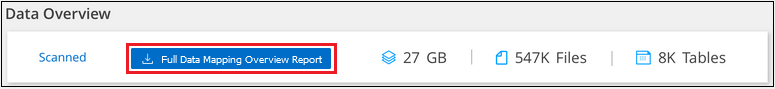

문서 변경 요청
문서 변경 요청 이 페이지 편집
이 페이지 편집 기여하는 방법 자세히 알아보기
기여하는 방법 자세히 알아보기준수 보고서 보기
Cloud Data Sense는 조직의 데이터 개인 정보 보호 프로그램 상태를 더 잘 이해하는 데 사용할 수 있는 보고서를 제공합니다.
기본적으로 Cloud Data Sense 대시보드에는 모든 작업 환경, 데이터베이스 및 데이터 소스에 대한 규정 준수 및 거버넌스 데이터가 표시됩니다. 일부 작업 환경에 대한 데이터만 포함된 보고서를 보려면 작업 환경을 선택합니다.

|
|
개인 정보 보호 위험 평가 보고서
개인 정보 보호 위험 평가 보고서는 GDPR 및 CCPA와 같은 개인 정보 보호 규정에 따라 조직의 개인 정보 보호 위험 상태에 대한 개요를 제공합니다. 보고서에는 다음 정보가 포함됩니다.
- 준수 상태
-
A 심각도 점수 또한 데이터가 중요하지 않거나 개인적이거나 민감한 개인이든 상관없이 배포할 수 있습니다.
- 평가 개요
-
발견된 개인 데이터 유형 및 데이터 범주에 대한 분석.
- 이 평가의 데이터 주체
-
국가 식별자가 발견된 위치별 사람 수.
개인 정보 보호 위험 평가 보고서 생성
데이터 감지 탭으로 이동하여 보고서를 생성합니다.
-
Cloud Manager 상단에서 * 데이터 감지 * 를 클릭합니다.
-
Compliance * 를 클릭한 다음 * Reports * 에서 * Privacy Risk Assessment * 옆에 있는 다운로드 아이콘을 클릭합니다.

Cloud Data Sense는 PDF 보고서를 생성하여 필요에 따라 다른 그룹에 검토 및 전송할 수 있습니다.
심각도 점수
Cloud Data Sense는 세 가지 변수를 기준으로 개인 정보 보호 위험 평가 보고서의 심각도 점수를 계산합니다.
-
모든 데이터 중 개인 데이터의 비율입니다.
-
모든 데이터 중 중요한 개인 데이터의 비율입니다.
-
국가 ID, 사회 보장 번호 및 세금 ID 번호와 같은 국가 식별자에 의해 결정되는 데이터 주제가 포함된 파일의 비율입니다.
점수를 결정하는 데 사용되는 논리는 다음과 같습니다.
| 심각도 점수 | 논리 |
|---|---|
0 |
세 가지 변수는 모두 정확히 0%입니다 |
1 |
변수 중 하나가 0%보다 큽니다 |
2 |
변수 중 하나가 3%보다 큽니다 |
3 |
변수 중 두 개가 3%보다 큽니다 |
4 |
변수 중 3개가 3%보다 큽니다 |
5 |
변수 중 하나가 6%보다 큽니다 |
6 |
변수 중 두 개가 6%보다 큽니다 |
7 |
변수 중 3개가 6%보다 큽니다 |
8 |
변수 중 하나가 15%보다 큽니다 |
9 |
변수 중 두 개가 15%보다 큽니다 |
10 |
세 개의 변수가 15%보다 큽니다 |
PCI DSS 보고서
PCI DSS(Payment Card Industry Data Security Standard) 보고서를 통해 파일 전체에서 신용 카드 정보의 분포를 확인할 수 있습니다. 보고서에는 다음 정보가 포함됩니다.
- 개요
-
신용 카드 정보와 작업 환경이 포함된 파일 수
- 암호화
-
암호화 또는 암호화되지 않은 작업 환경에 있는 신용 카드 정보가 포함된 파일의 비율입니다. 이 정보는 Cloud Volumes ONTAP에만 해당됩니다.
- 랜섬웨어 보호
-
랜섬웨어 보호가 활성화된 작업 환경에 있는 신용 카드 정보가 포함된 파일의 비율입니다. 이 정보는 Cloud Volumes ONTAP에만 해당됩니다.
- 보존
-
파일이 마지막으로 수정된 기간. 이 기능은 신용 카드 정보를 처리하는 데 필요한 것보다 더 오래 보관해서는 안 되기 때문에 유용합니다.
- 신용 카드 정보 배포
-
신용 카드 정보가 발견된 작업 환경 및 암호화 및 랜섬웨어 방지 기능이 활성화되어 있는지 여부
PCI DSS 보고서 생성
데이터 감지 탭으로 이동하여 보고서를 생성합니다.
-
Cloud Manager 상단에서 * 데이터 감지 * 를 클릭합니다.
-
규정 준수 * 를 클릭한 다음 * 보고서 * 에서 * PCI DSS 보고서 * 옆에 있는 다운로드 아이콘을 클릭합니다.

Cloud Data Sense는 PDF 보고서를 생성하여 필요에 따라 다른 그룹에 검토 및 전송할 수 있습니다.
HIPAA 보고서
HIPAA(Health Insurance Portability and Accountability Act) 보고서를 통해 건강 정보가 포함된 파일을 확인할 수 있습니다. 이 솔루션은 HIPAA 데이터 개인 정보 보호법을 준수하기 위한 조직의 요구 사항을 지원하도록 설계되었습니다. Cloud Data Sense에서 찾는 정보는 다음과 같습니다.
-
상태 참조 패턴
-
ICD-10-cm 의료 코드
-
ICD-9-cm 의료 코드
-
HR – 건강 범주
-
상태 응용 프로그램 데이터 범주입니다
보고서에는 다음 정보가 포함됩니다.
- 개요
-
상태 정보가 포함된 파일 수와 작업 환경이 포함된 파일 수
- 암호화
-
암호화 또는 암호화되지 않은 작업 환경에 있는 상태 정보가 포함된 파일의 비율입니다. 이 정보는 Cloud Volumes ONTAP에만 해당됩니다.
- 랜섬웨어 보호
-
랜섬웨어 보호가 활성화된 작업 환경에 대한 상태 정보가 포함된 파일의 비율입니다. 이 정보는 Cloud Volumes ONTAP에만 해당됩니다.
- 보존
-
파일이 마지막으로 수정된 기간. 이 기능은 건강 정보를 처리하는 데 필요한 것보다 오래 보관할 필요가 없기 때문에 유용합니다.
- 건강 정보 배포
-
상태 정보가 발견된 작업 환경 및 암호화 및 랜섬웨어 방지 기능이 활성화되어 있는지 여부
HIPAA 보고서 생성
데이터 감지 탭으로 이동하여 보고서를 생성합니다.
-
Cloud Manager 상단에서 * 데이터 감지 * 를 클릭합니다.
-
규정 준수 * 를 클릭한 다음 * 보고서 * 에서 * HIPAA 보고서 * 옆에 있는 다운로드 아이콘을 클릭합니다.

Cloud Data Sense는 PDF 보고서를 생성하여 필요에 따라 다른 그룹에 검토 및 전송할 수 있습니다.
데이터 매핑 보고서
데이터 매핑 보고서는 마이그레이션, 백업, 보안 및 규정 준수 프로세스를 결정하는 데 도움이 되도록 기업 데이터 소스에 저장되는 데이터에 대한 개요를 제공합니다. 이 보고서에는 먼저 작업 환경 및 데이터 소스를 모두 요약하는 개요 보고서가 나열되어 있으며 각 작업 환경에 대한 분석을 제공합니다.
보고서에는 다음 정보가 포함됩니다.
- 사용 용량
-
모든 작업 환경: 각 작업 환경의 파일 수와 사용된 용량을 나열합니다. 단일 작업 환경의 경우: 최대 용량을 사용하는 파일을 나열합니다.
- 데이터 사용 기간
-
파일이 생성되거나, 마지막으로 수정되거나, 마지막으로 액세스된 시간에 대한 3개의 차트와 그래프를 제공합니다. 특정 날짜 범위를 기준으로 파일 수와 사용된 용량을 나열합니다.
- 데이터 크기
-
작업 환경의 특정 크기 범위 내에 있는 파일 수를 나열합니다.
- 파일 형식
-
에는 작업 환경에 저장되는 각 파일 유형의 총 파일 수와 사용된 용량이 나와 있습니다.
데이터 매핑 보고서 생성
데이터 감지 탭으로 이동하여 보고서를 생성합니다.
-
Cloud Manager 상단에서 * 데이터 감지 * 를 클릭합니다.
-
Governance * 를 클릭한 다음 Governance Dashboard에서 * Full Data Mapping Overview Report * 버튼을 클릭합니다.

Cloud Data Sense는 PDF 보고서를 생성하여 필요에 따라 다른 그룹에 검토 및 전송할 수 있습니다.
데이터 조사 보고서
데이터 조사 보고서는 데이터 조사 페이지의 내용을 다운로드하는 것입니다. "데이터 조사 페이지에 대해 자세히 알아보십시오".
보고서를 로컬 컴퓨터에 .csv 파일(최대 5,000개의 데이터 행 포함) 또는 NFS 공유로 내보내는 .JSON 파일(행 수 무제한 포함)로 저장할 수 있습니다. 데이터 센스에서 파일(구조화되지 않은 데이터), 디렉토리(폴더 및 파일 공유) 또는 데이터베이스(구조화된 데이터)를 검색하는 경우 최대 3개의 보고서 파일을 다운로드할 수 있습니다.
파일 공유로 내보낼 때 데이터 센스에 내보내기 액세스에 대한 올바른 권한이 있는지 확인하십시오.
데이터 조사 보고서 생성
-
데이터 조사 페이지에서 을 클릭합니다
 버튼을 클릭합니다.
버튼을 클릭합니다. -
데이터의 .csv 보고서 또는 .JSON 보고서를 다운로드할지 여부를 선택하고 * 보고서 다운로드 * 를 클릭합니다.

JSON 보고서를 선택할 때 보고서를 다운로드할 NFS 공유의 이름을 '<host_name>:/<share_path>' 형식으로 입력합니다.
대화 상자에 보고서가 다운로드되고 있다는 메시지가 표시됩니다.
에서 JSON 보고서 생성 진행률을 볼 수 있습니다 작업 상태 창.
각 데이터 조사 보고서에 포함된 내용
비정형 파일 데이터 보고서 * 에는 파일에 대한 다음 정보가 포함됩니다.
-
파일 이름입니다
-
위치 유형
-
작업 환경 이름입니다
-
스토리지 저장소(예: 볼륨, 버킷, 공유)
-
작업 환경 유형입니다
-
파일 경로
-
파일 형식
-
파일 크기
-
만든 시간
-
마지막 수정
-
마지막 액세스
-
파일 소유자
-
범주
-
개인 정보
-
민감한 개인 정보
-
삭제 감지 날짜입니다
삭제 감지 날짜는 파일이 삭제되거나 이동된 날짜를 나타냅니다. 이렇게 하면 중요한 파일이 이동된 시기를 식별할 수 있습니다. 삭제된 파일은 대시보드나 조사 페이지에 나타나는 파일 번호 개수에 포함되지 않습니다. 파일은 CSV 보고서에만 나타납니다.
비정형 디렉터리 데이터 보고서 * 에는 폴더 및 파일 공유에 대한 다음 정보가 포함되어 있습니다.
-
작업 환경 이름입니다
-
스토리지 저장소(예: 폴더 또는 파일 공유)
-
작업 환경 유형입니다
-
파일 경로(디렉토리 이름)
-
파일 소유자
-
만든 시간
-
검색된 시간
-
마지막 수정
-
마지막 액세스
-
권한을 엽니다
-
디렉터리 유형입니다
Structured Data Report * 에는 데이터베이스 테이블에 대한 다음 정보가 포함되어 있습니다.
-
DB 테이블 이름입니다
-
위치 유형
-
작업 환경 이름입니다
-
스토리지 저장소(예: 스키마)
-
열 개수
-
행 수
-
개인 정보
-
민감한 개인 정보
보고서에 사용할 작업 환경 선택
Cloud Data Sense Compliance 대시보드의 콘텐츠를 필터링하여 모든 작업 환경 및 데이터베이스에 대한 규정 준수 데이터를 확인하거나 특정 작업 환경에 대한 규정 준수 데이터를 확인할 수 있습니다.
대시보드를 필터링할 때 데이터 센스에서 규정 준수 데이터와 보고서의 범위를 선택한 작업 환경만으로 설정합니다.
-
필터 드롭다운을 클릭하고 데이터를 보려는 작업 환경을 선택한 다음 * 보기 * 를 클릭합니다.